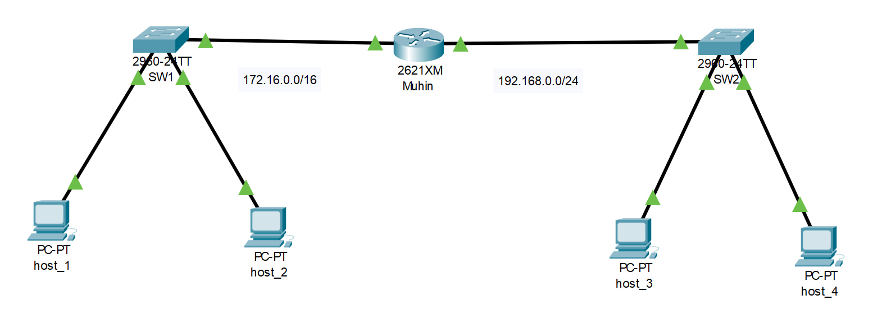
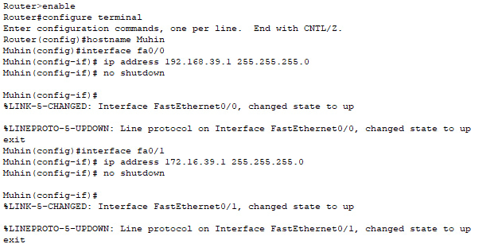

Дисциплина: Основы компьютерных сетей
Студент: Мухин Григорий Сергеевич
Группа: 1ЭИТ1-9.24
Год: 2025
На изображении ниже представлена собранная сеть, созданная в Cisco Packet Tracer. В её состав входят два коммутатора, один маршрутизатор и четыре конечных устройства.

enable
configure terminal
hostname Muhin
interface fa0/0
ip address 192.168.39.1 255.255.255.0
no shutdown
exit
interface fa0/1
ip address 172.16.39.1 255.255.255.0
no shutdown
exit
write

В рамках задания маршрутизатор был переименован в Muhin.
В соответствии с номером в списке студента, все IP-адреса содержат третий октет 39.
На скриншоте отображён результат команды ping от host_1 к host_3. Ответ подтверждает корректную маршрутизацию и работоспособность сети.
В ходе контрольной точки была собрана и вручную настроена простая локальная сеть с двумя подсетями. Настройка произведена через CLI. Работоспособность подтверждена, конфигурации сохранены, HTML-отчёт оформлен и вложен.